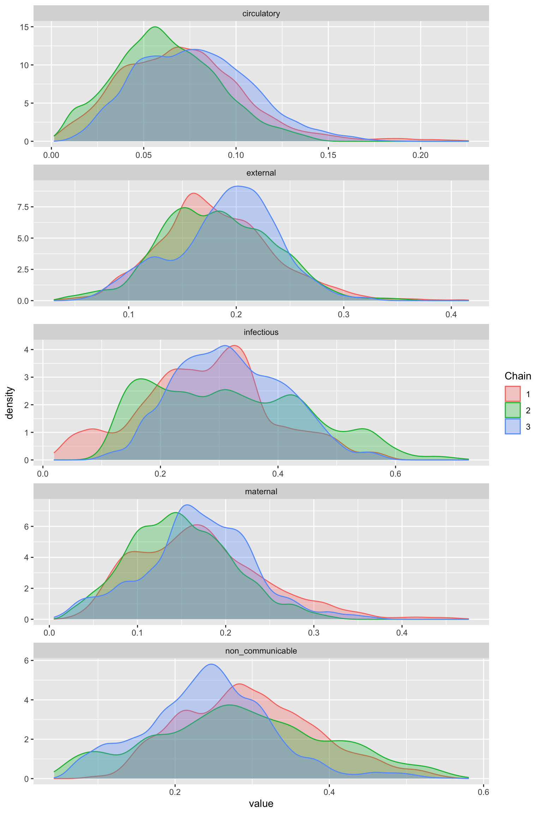

vignettes/CalibratedVA.Rmd
CalibratedVA.RmdMany countries cannot conduct full autopsies for the majority of deaths due to either cultural or economic limitations (AbouZahr et al. 2015; Allotey et al. 2015). Rather than perform an invasive autopsy, an alternative method to determine the cause (or “etiology”) of death (COD) is to conduct a verbal autopsy (VA), where relatives of the deceased individual are asked a set list of questions to obtain information about symptoms experienced by the deceased observed prior to death (Soleman, Chandramohan, and Shibuya 2006). Medical experts can then use these VA responses to determine the COD for an individual.
If we are interested in obtaining causes of death for a large amount of individuals in a region or country, in order to determine optimal resource allocation, we need an efficient way to scale the process of determining the COD from VA data. Several algorithms have recently been proposed to automatically predict COD from VA records. These computer coded VA (CCVA) algorithms predict COD using the VA records as input. Examples include Tariff (James, Flaxman, and Murray 2011; Serina et al. 2015), interVA (Byass et al. 2012), and InsilicoVA (McCormick et al. 2016). These algorithms all require some gold standard (GS) information – either a training dataset with both VA symptom data and a gold standard (GS) COD determined for each individual or some symptom-given-cause probability matrix.
If we are interested in obtaining national estimates of cause specific mortality fraction (CSMF), we cantrain one of the above CCVA algorithms with GS COD data from our country of interest, obtain individual predictions from CCVA data for the country of interest, and then aggregate the predictions to the CSMF level. However, there may be limited amounts of GS COD data for a new country. In addition, algorithms trained on GS COD from other countries may not be as accurate.
The CalibratedVA package is to be used for exactly the situation above– we take predictions from one or multiple algorithm(s) trained on a large non-local dataset, and use the local GS COD dataset to improve the CSMF estimates via local calibration.
The Population Health Metrics Research Consortium (PHMRC) study contains GS COD data for children, neonates and adults in 4 countries, making it a perfect dataset to demonstrate the merits of CalibratedVA.
We have used the openVA package to obtain cause-of-death predictions for adult deaths from Tanzania. Both InSilicoVA and Tariff were trained using deaths from the other 3 countries. We obtained individual cause probability predictions from InSilicoVA and individual top cause-of-death predictions from Tariff. We will also read in the GS-COD for each death from Tanzania.
There are 34 causes, which is too many causes for CalibratedVA to be useful. We will map these causes to broader causes, using the following cause map.
data("phmrc_adult_cause_map")
To map the causes, we can provide either the probability matrix:
insilico_tanzania <- map_causes(insilico_tanzania, phmrc_adult_cause_map)
Or the character vector with the predicted cause or GS-COD for each individual
tariff_tanzania <- map_causes(tariff_tanzania$cause, phmrc_adult_cause_map) gs_cod_tanzania <- map_causes(gs_cod_tanzania, phmrc_adult_cause_map)
We will first run CalibratedVA using the Tariff predictions. To run CalibratedVA, we will first select a set of individuals to be in our “hospital” set–that is, individuals for whom we know their GS-COD. These individuals will be used for estimation of algorithm misclassification rates. We will simply use the first 200 individuals from the data. We will use the default settings for all hyperparameter values.
causes <- colnames(tariff_tanzania) tariff_calibratedva <- calibratedva(A_U = tariff_tanzania[-(1:200),], A_L = tariff_tanzania[1:200,], G_L = gs_cod_tanzania[1:200,], causes = causes)
We can use the ggmcmc package to obtain CSMF estimates for the individual causes, along with credible intervals.
library(ggmcmc) P <- data.frame( Parameter=paste0("p[", 1:length(causes), "]"), Label=causes) tariff_csmf_samples <- ggs(tariff_calibratedva$samples, par_labels=P, family="p") ### CSMF with credible intervals tariff_csmf <- tariff_csmf_samples %>% group_by(Parameter) %>% summarise(csmf = mean(value), ci_L = quantile(value, .025), ci_U = quantile(value, .975)) tariff_csmf #> # A tibble: 5 x 4 #> Parameter csmf ci_L ci_U #> <fct> <dbl> <dbl> <dbl> #> 1 circulatory 0.122 0.0374 0.241 #> 2 external 0.137 0.0323 0.302 #> 3 infectious 0.301 0.0740 0.578 #> 4 maternal 0.187 0.0417 0.377 #> 5 non_communicable 0.253 0.0436 0.513
We can also view the traceplot
ggs_traceplot(tariff_csmf_samples)
And a posterior density plot
ggs_density(tariff_csmf_samples)
We can use both the predictions from both InSilicoVA and Tariff to better estimate the CSMF using the ensemble approach. We simply need to format the predictions into a list of matrices
ensemble_unlabeled <- list(tariff_tanzania[-(1:200),], insilico_tanzania[-(1:200),]) ensemble_labeled <- list(tariff_tanzania[1:200,], insilico_tanzania[1:200,])
ensemble_calibratedva <- calibratedva(A_U = ensemble_unlabeled, A_L = ensemble_labeled, G_L = gs_cod_tanzania[1:200,], causes = causes)
ensemble_csmf_samples <- ggs(ensemble_calibratedva$samples, par_labels=P, family="p") ### CSMF with credible intervals ensemble_csmf <- ensemble_csmf_samples %>% group_by(Parameter) %>% summarise(csmf = mean(value), ci_L = quantile(value, .025), ci_U = quantile(value, .975)) ensemble_csmf #> # A tibble: 5 x 4 #> Parameter csmf ci_L ci_U #> <fct> <dbl> <dbl> <dbl> #> 1 circulatory 0.0689 0.0167 0.134 #> 2 external 0.168 0.0631 0.288 #> 3 infectious 0.271 0.0450 0.493 #> 4 maternal 0.172 0.0446 0.309 #> 5 non_communicable 0.320 0.119 0.524
We can also view the traceplot
ggs_traceplot(ensemble_csmf_samples)
And a posterior density plot
ggs_density(ensemble_csmf_samples)

We can increase the alpha parameter to increase the amount of shrinkage. As an extreme example, we will set alpha = 500, and show that the estimated CSMF is very similar to the predicted CSMF
tariff_highshrinkage <- calibratedva(A_U = tariff_tanzania[-(1:200),], A_L = tariff_tanzania[1:200,], G_L = gs_cod_tanzania[1:200,], causes = causes, alpha = 500)
### CSMF with credible intervals tariff_highshrinkage_csmf <- ggs(tariff_highshrinkage$samples, par_labels=P, family="p") %>% group_by(Parameter) %>% summarise(csmf = mean(value)) tariff_highshrinkage_csmf #> # A tibble: 5 x 2 #> Parameter csmf #> <fct> <dbl> #> 1 circulatory 0.105 #> 2 external 0.167 #> 3 infectious 0.300 #> 4 maternal 0.146 #> 5 non_communicable 0.282 colMeans(tariff_tanzania[-(1:200),]) #> circulatory external infectious maternal #> 0.1080636 0.1716950 0.2934723 0.1508502 #> non_communicable #> 0.2759188
Rather than shrinking the misclassification matrix (“M”) to the identity matrix, we can directly shrink the CSMF (“p”) to the predicted CSMF on the unlabeled data. This is simply done using method = "pshrink". When using this method, the level of shrinkage is controlled by lambda, where higher values lead to more shrinkage. Setting lambda = 1 (the default) will lead to little shrinkage.
tariff_pshrink <- calibratedva(A_U = tariff_tanzania[-(1:200),], A_L = tariff_tanzania[1:200,], G_L = gs_cod_tanzania[1:200,], causes = causes, method = "pshrink", lambda = 1) ggs_density(ggs(tariff_pshrink$samples, par_labels=P, family="p"))
We can see that the above approach leads to multimodality. We can use the tune_calibratedva function to choose a value of lambda which has the best WAIC, and for which the posterior will be unimodal and will have a low Rhat. The below example only uses 5 values of lambda for the gridsearch, but we recommend searching over a larger number of values. We will also reduce the number of draws from 10,000 (default) to 5,000. This is not necessarily recommended, but will reduce the run-time for this example.
tariff_pshrink_tuned <- tune_calibratedva(A_U = tariff_tanzania[-(1:200),], A_L = tariff_tanzania[1:200,], G_L = gs_cod_tanzania[1:200,], causes = causes, method = "pshrink", lambda_vec = c(.1, 1, 10, 50, 100), ndraws = 5000) ggs_density(ggs(tariff_pshrink_tuned$final_model$samples, par_labels=P, family="p"))
We can also compare the WAIC of the chosen model to the WAIC of the uncalibrated model, as well as to the WAIC values for all values of the parameter we performed the grid search over:
tariff_pshrink_tuned$waic_final #> [1] 6256.641 tariff_pshrink_tuned$waic_uncalib #> [1] 8224.48 tariff_pshrink_tuned$waic_df #> param waic_calib multimodal rhat_max #> 1 0.1 6269.791 TRUE 1.908583 #> 2 1.0 6263.065 TRUE 1.939429 #> 3 10.0 6257.456 FALSE 1.171580 #> 4 50.0 6256.721 FALSE 1.045764 #> 5 100.0 6256.641 FALSE 1.026168
We can also tune the models by collecting a list of models for different values of lambda (or alpha for M-shrinkage), and supplying this list to tune_calibratedva. This is especially useful if we want to use parallelization to run the Gibbs sampling for the grid search, and then obtain the best model.
lambda_vec <- c(.1, 1, 10, 50, 100) tariff_samples_list <-lapply(lambda_vec, function(lambda) { calibrateva_out <- calibratedva(A_U = tariff_tanzania[-(1:200),], A_L = tariff_tanzania[1:200,], G_L = gs_cod_tanzania[1:200,], causes = causes, method = "pshrink", lambda = lambda, ndraws = 5000) return(calibrateva_out) }) tariff_pshrink_tuned2 <- tune_calibratedva(A_U = tariff_tanzania[-(1:200),], A_L = tariff_tanzania[1:200,], G_L = gs_cod_tanzania[1:200,], causes = causes, method = "pshrink", samples_list = tariff_samples_list, lambda_vec = c(.1, 1, 10, 50, 100)) identical(tariff_pshrink_tuned$waic_df, tariff_pshrink_tuned2$waic_df) #> [1] TRUE
AbouZahr, Carla, Don De Savigny, Lene Mikkelsen, Philip W Setel, Rafael Lozano, Erin Nichols, Francis Notzon, and Alan D Lopez. 2015. “Civil Registration and Vital Statistics: Progress in the Data Revolution for Counting and Accountability.” The Lancet 386 (10001). Elsevier: 1373–85.
Allotey, Pascale A, Daniel D Reidpath, Natalie C Evans, Nirmala Devarajan, Kanason Rajagobal, Ruhaida Bachok, Kridaraan Komahan, and SEACO Team. 2015. “Let’s Talk About Death: Data Collection for Verbal Autopsies in a Demographic and Health Surveillance Site in Malaysia.” Global Health Action 8 (1). Taylor & Francis: 28219.
Byass, Peter, Daniel Chandramohan, Samuel J Clark, Lucia D’ambruoso, Edward Fottrell, Wendy J Graham, Abraham J Herbst, et al. 2012. “Strengthening Standardised Interpretation of Verbal Autopsy Data: The New Interva-4 Tool.” Global Health Action 5 (1). Taylor & Francis: 19281.
James, Spencer L, Abraham D Flaxman, and Christopher JL Murray. 2011. “Performance of the Tariff Method: Validation of a Simple Additive Algorithm for Analysis of Verbal Autopsies.” Population Health Metrics 9 (1). BioMed Central: 31.
McCormick, Tyler H, Zehang Richard Li, Clara Calvert, Amelia C Crampin, Kathleen Kahn, and Samuel J Clark. 2016. “Probabilistic Cause-of-Death Assignment Using Verbal Autopsies.” Journal of the American Statistical Association 111 (515). Taylor & Francis: 1036–49.
Serina, Peter, Ian Riley, Andrea Stewart, Spencer L James, Abraham D Flaxman, Rafael Lozano, Bernardo Hernandez, et al. 2015. “Improving Performance of the Tariff Method for Assigning Causes of Death to Verbal Autopsies.” BMC Medicine 13 (1). BioMed Central: 291.
Soleman, Nadia, Daniel Chandramohan, and Kenji Shibuya. 2006. “Verbal Autopsy: Current Practices and Challenges.” Bulletin of the World Health Organization 84. SciELO Public Health: 239–45.